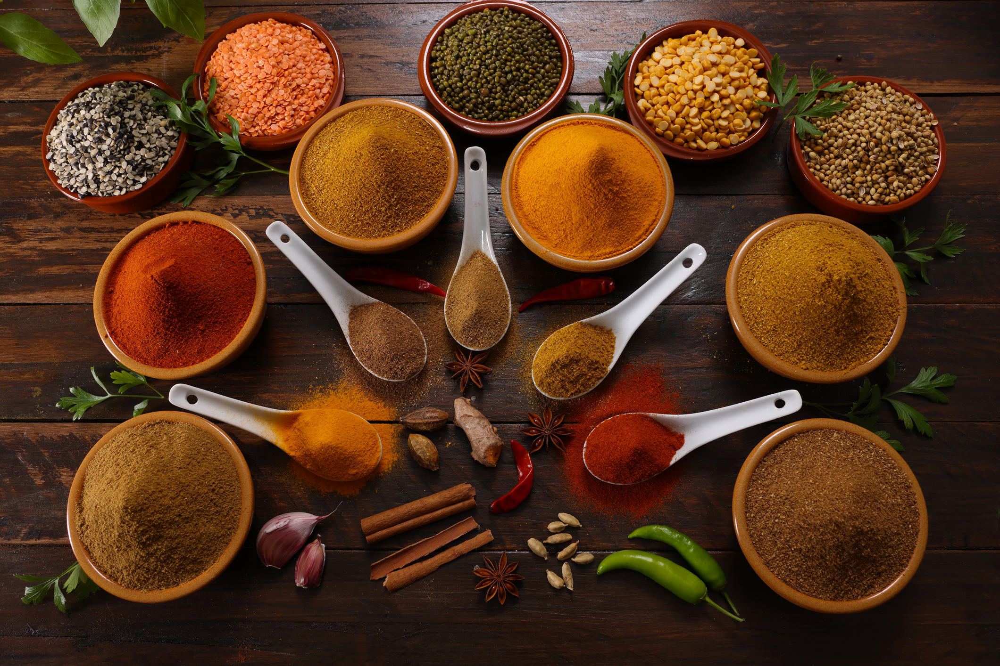

Flor de Lis
¡Lo mejor para tu negocio está en Flor de Lis! En Flor de Lis somos una empresa familiar dedicada a la producción y comercialización de frutos secos, frutas deshidratadas, semillas, condimentos, conservas, cereales, aceites y mucho más. Ofrecemos productos seleccionados con dedicación, calidad y variedad, para acompañar el crecimiento de tu negocio y brindarte opciones que tus clientes van a disfrutar. Encontrá todo lo que necesitás en un solo lugar, conocé nuestro catálogo y descubrí nuestras opciones para compras minoristas y mayoristas. ¡Elegí calidad, variedad y confianza para tu negocio. Elegí Flor de Lis!